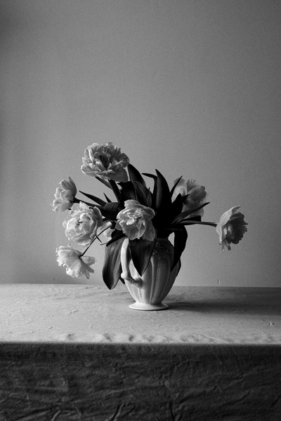

<!DOCTYPE html>
<html lang="en">
<head>
    <meta charset="UTF-8">
    <meta name="viewport" content="width=device-width, initial-scale=1.0">
    <title>Image srcset attribute</title>
    <style>
        .image {
            width: 100%;
        }

    </style>
    <!-- 
    ## Trang web sử dụng ít hình ảnh (Tốc độ tải trang không bị ảnh hưởng bởi hình ảnh)
        Tối ưu sử dụng hình ảnh trên trang web?
    
            1. Sử dụng dạng hình ảnh phù hợp
                - Hình học, vector, vv: SVG
                - Bitmap transparent: PNG, WEBP
                - Bitmap không transparent: JPEG, WEBP
            2. Nén ảnh giảm dung lượng
                - https://tinypng.com/
            3. Sử dụng kích thước ảnh phù hợp?
                - Orignal: 4000px x 4000px, Figma: 800px x 800px (CSS), Resize: 1600px x1600px (2x)
                đáp ứng tốt cho cả màn hình PPI/DPI cao (retina)
                - PPI (Pixel per inch), DPI (Dots per inch): 100 DPI, 300 DPI
    
        Loại màn hình:
            1. Màn hình thường (DPI thấp - 1:1): 800px x 800px ✔
            2. Màn hình retina (DPI cao -2:1): 800px x 800px ❌ 1600px x 1600px ✔
    
    ## Trang web sử dụng nhiều hình ảnh
        Thiết bị:
            1. Mobile 1600px x 1600px ❌ => Tốn băng thông, chờ lâu hơn => Giảm trải nghiệm người dùng
            2. Tablet 1600px x 1600px ❌
            3. Desktop: 1600px x 1600px ✔

    ## Bài toán 1
        1. Mobile: 50px x 50px
        2. Tablet: 100px x 100px
        3. Desktop: 200px x 200px
        
    ## Bài toán 2
        - Desktop: 200px x 200px

    ## Bài toán 3
        - Desktop:./img/ảnh-1.jpg
        - Mobile:./img/ảnh-2.jpg
    -->
</head>
<body>
    <!-- 1. Resolution switching: Different sizes -->
        <!--  -->

    <!-- 2. Resolution switching: Same size, different resolutions -->
            <!--  -->

    <!-- 3. Art direction -->
    <!-- <picture>
        <source media="(max-width: 575px)" srcset="./img/img-small.jpg" />
        
    </picture> -->
      

</body>
</html>